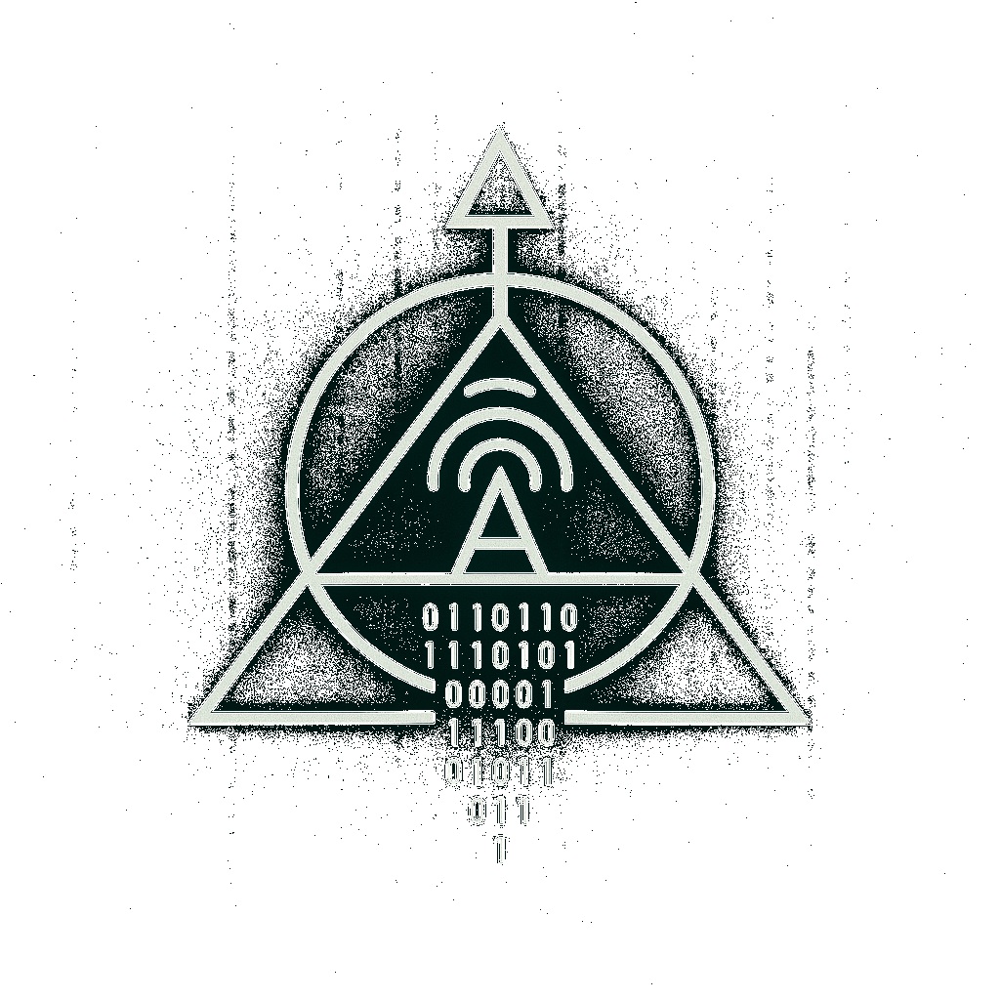

🦉 Moloch 🦉
They gave their children to the fire in his name. In this place, the echoes of sacrifice still burn through time.
They gave their children to the fire in his name. In this place, the echoes of sacrifice still burn through time.